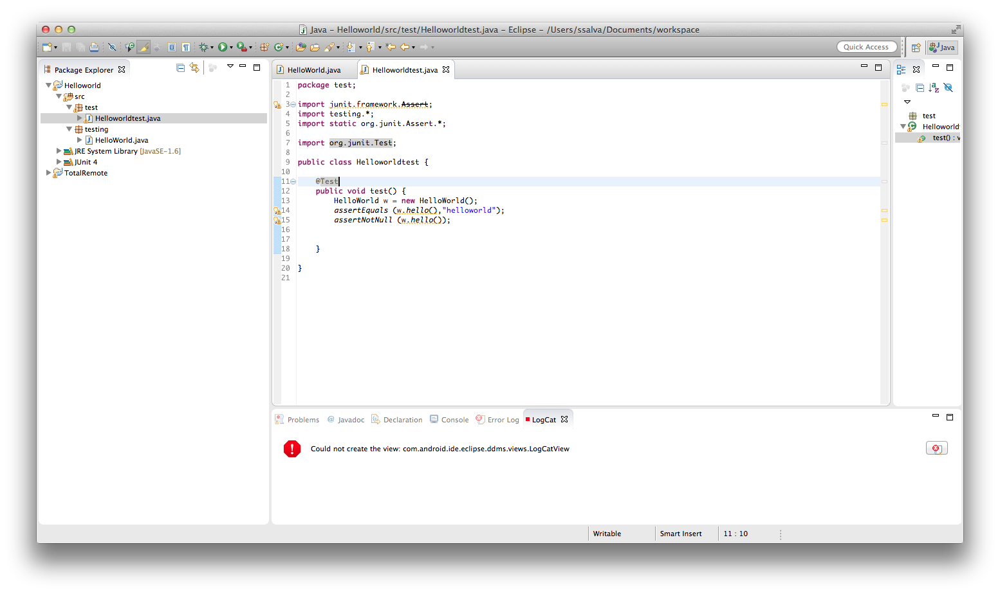

<!DOCTYPE html PUBLIC "-//W3C//DTD HTML 4.01//EN" "http://www.w3.org/TR/html4/strict.dtd">
<html><head>
<meta http-equiv="content-type" content="text/html; charset=windows-1252"><title></title>

  

  
  
  <meta name="Author" content="">

  
  <meta name="GENERATOR" content="Mozilla/3.03Gold (Win16; I) [Netscape]"></head><body>
<b>TP cycle de vie des applications</b><br>

S. Salva<br>

<br>

<div align="center">
<table cellspacing="2" cellpadding="2" border="1">
  <tbody>
    <tr>
      <td valign="top">
      <h1 align="center"><font color="#800040">TP2 Tests Unitaires</font></h1>
      <font color="#800040"> </font></td>
    </tr>
  </tbody>
</table>
</div>

<p><font color="#990000"><br>
</font></p>

<h2><font color="#990000">1. Objectifs</font>
</h2>

<p>Savoir développer des tests unitaires<br>
Effectuer la couverture de test d'une application<br>
</p>

<p><br>
</p>

<h2><font color="#990000">2. Un cas de test helloworld en JUNIT</font></h2>

<font color="#990000"> A <font color="#000040"><br>
</font></font>
<p><font color="#990000"><font color="#000040">Créez un projet Java
dans Eclipse composé d'une classe HelloWorld et d'une méthode
retournant la chaine "helloworld".</font></font></p>

<p>
<font color="#990000"><font color="#000040"><font color="#990000"> B <font color="#000040"><br>
</font></font></font></font></p>

<p><font color="#990000"><font color="#000040"><font color="#990000"><font color="#000040">Ajoutez un package test, faites un click droit (c'est
classique) et <i>New Junit TestCase</i><br>
Créez votre test unitaire comme sur la copie d'écran:</font></font></font></font></p>

<font color="#990000"><font color="#000040"><font color="#990000"><font color="#000040">
</font></font></font></font>
<p><font color="#990000"><font color="#000040"><font color="#990000"><font color="#000040">Testez la méthode avec quelques assertions
(assertEquals,
assertNotNull, etc.). Vous trouvez une liste exaustive d'assertions <a href="http://junit.sourceforge.net/javadoc/org/junit/Assert.html">sur ce lien</a>.<br>
</font></font></font></font></p>

<p><font color="#990000"><font color="#000040"><font color="#990000"><font color="#000040">Puis lancez le cas de test avec "Run as Junit
Test". Vous devriez obtenir ceci:</font></font></font></font></p>

<font color="#990000"><font color="#000040"><font color="#990000"><font color="#000040">
</font></font></font></font>
<p><font color="#990000"><font color="#000040"><font color="#990000"><font color="#000040">On dit que le cas de test est un succès, ou retourne
PASS</font></font></font></font></p>

<font color="#990000"><font color="#000040"><font color="#990000"><font color="#000040"><font color="#990000"> A <font color="#000040"><br>
</font></font></font></font></font></font>
<p><font color="#990000"><font color="#000040"><font color="#990000"><font color="#000040"><font color="#990000"><font color="#000040">Créez un
second cas de test, qui cette fois, retournera des assertions fausses
(Modifiez vos assertions précédantes).</font></font></font></font></font></font></p>

<p><font color="#990000"><font color="#000040"><font color="#990000"><font color="#000040"><font color="#990000"><font color="#000040">On
va cette fois ajouter une suite de tests (ensemble de cas de tests).
Faites "New/Java/JUNIT Test Suite". Sélectionnez les cas de tests
précédants.</font></font></font></font></font></font></p>

<font color="#990000"><font color="#000040"><font color="#990000"><font color="#000040"><font color="#990000"><font color="#000040">
</font></font></font></font></font></font>
<p><font color="#990000"><font color="#000040"><font color="#990000"><font color="#000040"><font color="#990000"><font color="#000040">Si
d'autres cas de test sont à ajouter vous pouvez le faire en recréant
cette classe: Click droit/Recreate Test Suite.</font></font></font></font></font></font></p>

<font color="#990000"><font color="#000040"><font color="#990000"><font color="#000040"><font color="#990000"><font color="#000040">
</font></font></font></font></font></font>
<p><font color="#990000"><font color="#000040"><font color="#990000"><font color="#000040"><font color="#990000"><font color="#000040">Lancez la
Suite de test. Vous obtenez ceci:</font></font></font></font></font></font></p>

<font color="#990000"><font color="#000040"><font color="#990000"><font color="#000040"><font color="#990000"><font color="#000040">
</font></font></font></font></font></font>
<p><font color="#990000"><font color="#000040"><font color="#990000"><font color="#000040"><font color="#990000"><font color="#000040"> Un cas de
test retourne une erreur, on dit aussi qu'il retourne FAIL</font></font></font></font></font></font></p>

<h2><font color="#990000"><font color="#000040"><font color="#990000"><font color="#000040"><font color="#990000"><font color="#000040"><font color="#990000">3.</font><font color="#990000">Une introduction aux
test drivent development TDD</font></font></font></font></font></font></font></h2>

<p><font color="#990000"><font color="#000040"><font color="#990000"><font color="#000040"><font color="#990000"><font color="#000040"><a href="http://en.wikipedia.org/wiki/Test-driven_development">Source
Wikipedia</a>:
<i>Test-driven development (TDD) is a software development process that
relies on the repetition of a very short development cycle: first the
developer writes an (initially failing) automated test case that
defines a desired improvement or new function, then produces the
minimum amount of code to pass that test, and finally refactors the new
code to acceptable standards. Kent Beck, who is credited with having
developed or 'rediscovered' the technique, stated in 2003 that TDD
encourages simple designs and inspires confidence.</i></font></font></font></font></font></font></p>

<p><font color="#990000"><font color="#000040"><font color="#990000"><font color="#000040"><font color="#990000"><font color="#000040">Intuitivement,
le développeur crée donc les tests avant de coder les classes petit à
petit. Ca permet de gagner en bonnes pratiques et d'obtenir du code
testé de façon incrémentale.</font></font></font></font></font></font></p>

<p><font color="#990000"><font color="#000040"><font color="#990000"><font color="#000040"><font color="#990000"><font color="#000040"><font color="#000000">A </font></font></font></font></font></font></font></p>

<p><font color="#990000"><font color="#000040"><font color="#990000"><font color="#000040"><font color="#990000"><font color="#000040">L'objectif
est ici d'implanter une classe <i>ManipulationString</i> qui contient
une méthode sum qui retourne la somme du code ASCII de chaque caractère
d'une chaine.</font></font></font></font></font></font></p>

<p>
</p>

<p><font color="#990000"><font color="#000040"><font color="#990000"><font color="#000040"><font color="#990000"><font color="#000040">
Commencez par créer un cas de test. Cette fois, au moment de la
création ajoutez la méthode "SetUp()" dans laquelle nous mettrons
l'instanciation de la classe (ms= new ManipulationString();) et ajoutez
une déclaration <i>private ManipulationString ms</i>). Créez un cas de
test pour vérifier la somme :<br>
<br public="" void="" testsumfunction="" ()="" {="">
<br>
int expected = 100;<br>
assertEquals ( expected , ms. sum("d"));<br>
expected = 265;<br>
assertEquals ( expected , ms. sum("Add"));<br>
<br>
<br>
</font></font></font></font></font></font></p>

<p><font color="#990000"><font color="#000040"><font color="#990000"><font color="#000040"><font color="#990000"><font color="#000040">Lancez le.
Evidemment ça ne marche pas, la classe n'étant pas implantée. </font></font></font></font></font></font></p>

<p><font color="#990000"><font color="#000040"><font color="#990000"><font color="#000040"><font color="#990000"><font color="#000040"><font color="#000000">B </font></font></font></font></font></font></font></p>

<p><font color="#990000"><font color="#000040"><font color="#990000"><font color="#000040"><font color="#990000"><font color="#000040">Implantez
la méthode sum() pour quelle valide le cas de test. Vérifiez que vous
arrivez au bon résultat en exécutant le cas de test de façon itérative.</font></font></font></font></font></font></p>

<p><font color="#990000"><font color="#000040"><font color="#990000"><font color="#000040"><font color="#990000"><font color="#000040"><font color="#000000">C </font></font></font></font></font></font></font></p>

<p><font color="#990000"><font color="#000040"><font color="#990000"><font color="#000040"><font color="#990000"><font color="#000040">Complétons
le cas de test avec:<br>
<br>
int expected = 0;<br>
assertEquals ( expected , ms. sum(""));<br>
<br>
</font></font></font></font></font></font></p>

<p><font color="#990000"><font color="#000040"><font color="#990000"><font color="#000040"><font color="#990000"><font color="#000040">Et
oui c'est un cas à ne pas oublier.<br>
Lancez le cas de test -&gt; Retourne-t-il Fail ? Corrigez le code de la
méthode jusqu'à que le cas
de test retourne PASS.</font></font></font></font></font></font></p>

<p><font color="#990000"><font color="#000040"><font color="#990000"><font color="#000040"><font color="#990000"><font color="#000040"><b>Le TDD
est sur ce principe, vous ajoutez une fonctionnalité au cas de test et
vous codez en vérifiant grâce au cas de test.</b></font></font></font></font></font></font></p>

<h2><font color="#990000"><font color="#000040"><font color="#990000"><font color="#000040"><font color="#990000"><font color="#000040"><font color="#990000">4.</font><font color="#990000">Gestion des exceptions
(TDD inside)</font></font></font></font></font></font></font></h2>

<p><font color="#990000"><font color="#000040"><font color="#990000"><font color="#000040"><font color="#990000"><font color="#000040"><font color="#000000">A </font></font></font></font></font></font></font></p>

<p><font color="#990000"><font color="#000040"><font color="#990000"><font color="#000040"><font color="#990000"><font color="#000040">Gérons les
exceptions. Complétez le cas de test avec l'appel à la méthode <i>ms.sum(null);</i>.
Si une exception est levée dans le cas de test, celui-ci doit retourner
FAIL (avec <i>fail("erreur") </i>).</font></font></font></font></font></font></p>

<p>
</p>

<p><font color="#990000"><font color="#000040"><font color="#990000"><font color="#000040"><font color="#990000"><font color="#000040"> Lancez le
cas de test. Et corrigez le code source du projet pour finalement
obtenir PASS.</font></font></font></font></font></font></p>

<p><font color="#990000"><font color="#000040"><font color="#990000"><font color="#000040"><font color="#990000"><font color="#000040"><font color="#000000">B </font></font></font></font></font></font></font></p>

<p><font color="#990000"><font color="#000040"><font color="#990000"><font color="#000040"><font color="#990000"><font color="#000040"> Cette
fois, on veut que la méthode <i>sum</i> renvoie l'exception <i>java.security.InvalidParameterException</i>
lorsque le paramètre "" est donné. Modifiez votre cas de test (blocs
try catch) pour vérifier que si l'exception <i>InvalidParameterException</i>
est reçue, alors le retour soit PASS.</font></font></font></font></font></font></p>

<p>
</p>

<p><font color="#990000"><font color="#000040"><font color="#990000"><font color="#000040"><font color="#990000"><font color="#000040"> Créez un
second cas de test comme suit. C'est une seconde solution à l'attente
de l'exception <i>java.security.InvalidParameterException</i>.</font></font></font></font></font></font></p>

<font color="#990000"><font color="#000040"><font color="#990000"><font color="#000040"><font color="#990000"><font color="#000040">@Test
(expected=java.security.InvalidParameterException.class)<br>
public void test2() throws Exception {<br>
ms.sum(null);<br>
<br>
</font></font></font></font></font></font><font color="#990000"><font color="#000040"><font color="#990000"><font color="#000040"><font color="#990000"><font color="#000040">Modifiez le code de la fonction
pour que les cas de test soient tous PASS.</font></font></font></font></font></font>
<h2><font color="#990000"><font color="#000040"><font color="#990000"><font color="#000040"><font color="#990000"><font color="#000040"><font color="#990000">5. Couverture de code.</font></font></font></font></font></font></font></h2>

<p><font color="#990000"><font color="#000040"><font color="#990000"><font color="#000040"><font color="#990000"><font color="#000040">La
couverture de code consiste à estimer le pourcentage de lignes de codes
ou de classes ou de composants exécutés par vos tests. C'est une donnée
très importante de plus en plus fournie aux clients.</font></font></font></font></font></font></p>

<font color="#990000"><font color="#000040"><font color="#990000"><font color="#000040"><font color="#990000"><font color="#000040"> </font></font></font></font></font></font>
<p><font color="#990000"><font color="#000040"><font color="#990000"><font color="#000040"><font color="#990000"><font color="#000040"> Nous
utiliserons ici le plugin <b>EclEmma</b>, basé sur <a href="" http:="" emma.sourceforge.net="">Emma</a> outil libre de couverture de code
très employé tant en Web, qu'en mobile etc.</font></font></font></font></font></font></p>

<p><font color="#990000"><font color="#000040"><font color="#990000"><font color="#000040"><font color="#990000"><font color="#000040"> </font></font></font></font></font></font></p>

<p><font color="#990000"><font color="#000040"><font color="#990000"><font color="#000040"><font color="#990000"><font color="#000040">Dans
Eclipse, faites <i>HELP/Install NEW Software/</i>. Indiquer
http://update.eclemma.org/ et installez EclEmma.<br>
L'installation d'EclEmma se traduit par une icône supplémentaire
("coverage") et des entrées supplémentaires dans les menus
contextuels. Notamment, un boutton <span style="font-style: italic;">Launch</span>
apparait, permettant d'exécuter une application tout en ayant sa
couverture.<br>
</font></font></font></font></font></font></p>

<p><font color="#990000"><font color="#000040"><font color="#990000"><font color="#000040"><font color="#990000"><font color="#000040"><font color="#000000">A </font></font></font></font></font></font></font></p>

<p>Reprenons le projet précédent. Lancez vos cas de test avec ce
nouveau boutton "Launch". Vous obtiendrez ce type d'écran, dans lequel
vous trouvez le code couvert, et dans l'éditeur des lignes de couleur: <br>
</p>

<ol>

  <li>vert indique que la ligne est couvert, <br>
  </li>
  <li>rouge non,</li>
  <li>une couleur orange indique une couverture partielle.<br>
  </li>
</ol>

<br>

<p>Attention: ce qui nous intéresse, c'est la couverture de la classe
ManipulationString.<br>
Dans
le cas de test, enlevez la partie de code, relative au test de
l'exception et relancez les tests. Maintenant dans la classe
ManipulationString, vous verrez que l'exception est en rouge.</p>

</body></html>